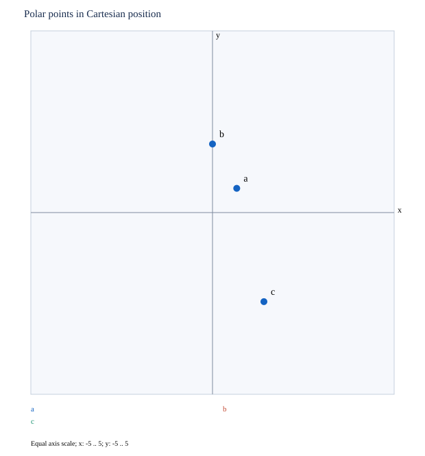

문제 요약
\(\text{(a)}\ (1,\frac{\pi}{4}),\quad\text{(b)}\ (-2,\frac{3 \pi}{2}),\quad\text{(c)}\ (3,- \frac{\pi}{3})\) 각 점을 표시하고 양의 반지름·음의 반지름 표현을 하나씩 새로 구하라.

힌트. 반지름의 부호와 각도를 함께 읽고 직교좌표 변환으로 확인한다.
해설.
\((r,\theta)\equiv(r,\theta+2k\pi)\equiv(-r,\theta+(2k+1)\pi)\)
\(x=r\cos\theta,\quad y=r\sin\theta\)
최종 답. \(\text{(a)}\ (1,\frac{9 \pi}{4}),\ (-1,\frac{5 \pi}{4});\quad\text{(b)}\ (2,\frac{5 \pi}{2}),\ (-2,\frac{7 \pi}{2});\quad\text{(c)}\ (3,\frac{5 \pi}{3}),\ (-3,\frac{2 \pi}{3})\)
검산·주의점. 직교좌표 변환·정의역·대칭성을 원래 조건에 대입해 확인했다.
Problem summary
\(\text{(a)}\ (1,\frac{\pi}{4}),\quad\text{(b)}\ (-2,\frac{3 \pi}{2}),\quad\text{(c)}\ (3,- \frac{\pi}{3})\) Plot each point and give two new polar representations, one with positive and one with negative radius.
Hint. Track the radius sign and angle together, checking with Cartesian conversion.
Solution.
\((r,\theta)\equiv(r,\theta+2k\pi)\equiv(-r,\theta+(2k+1)\pi)\)
\(x=r\cos\theta,\quad y=r\sin\theta\)
Final answer. \(\text{(a)}\ (1,\frac{9 \pi}{4}),\ (-1,\frac{5 \pi}{4});\quad\text{(b)}\ (2,\frac{5 \pi}{2}),\ (-2,\frac{7 \pi}{2});\quad\text{(c)}\ (3,\frac{5 \pi}{3}),\ (-3,\frac{2 \pi}{3})\)
Check and conditions. Cartesian conversion, domain, and symmetry were checked against the original conditions.